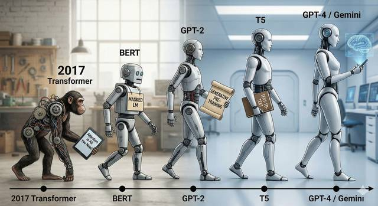
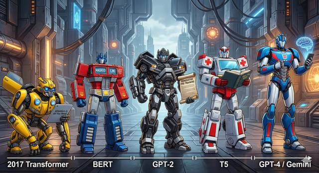

트랜스포머 싱귤래리티 (The Transformer Singularity)

어텐션의 탄생부타 2025년 멀티모달 에이전트와 추론 모델까지
제1부. 기원과 원리: 시퀀스 모델링의 패러다임 시프트 (Foundations)
제1장. 순차적 처리의 한계와 도전
제2장. 트랜스포머 아키텍처 해부 (Anatomy of Transformer)
제2부. 언어 모델의 캄브리아기 폭발 (The LLM Explosion)
제3장. 인코더의 시대: 이해(Understanding)의 혁명
제4장. 디코더의 시대: 생성(Generation)과 스케일링 법칙
제5장. 통합 아키텍처와 변형
제3부. 아키텍처의 최적화와 심화 (Optimization & Deep Dive)
제6장. 위치 인코딩의 진화 (Position Encoding)
제7장. 학습 안정성과 정규화 (Normalization)
제8장. 연산 효율화: O(N2) 극복하기
제4부. 확장의 기술: 효율성과 추론 (Scaling & Inference)
제9장. 전문가 혼합 모델 (Mixture of Experts, MoE)
제10장. 추론 가속과 경량화
제5부. 모달리티의 확장 (Beyond Text)
제11장. 비전 트랜스포머 (ViT)와 이미지 처리
제12장. 오디오와 시계열 데이터
제6부. 2025 최신 트렌드: 하이브리드와 에이전트 (Frontiers)
제13장. 네이티브 멀티모달과 융합 (Native Multimodal)
제14장. 구조적 혁신: 트랜스포머를 넘어서 (Beyond Transformer)
제15장. 추론(Reasoning) 모델과 강화학습
제16장. 에이전틱 AI (Agentic AI) 시대로
